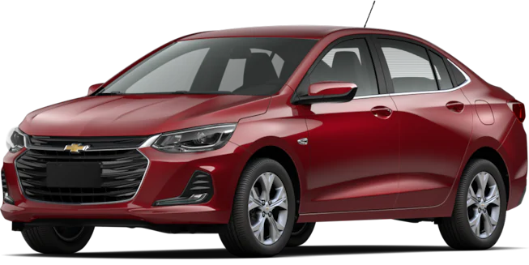

Tu beat se acelera en tu corazón cuando buscas nuevos caminos que recorrer. Sin importar hasta donde te lleven estás dispuesto a vivirlos y hacer de cada uno algo que jamás olvidarás.

Chevrolet Ónix 2021
La mejor tarjeta de presentación
El totalmente nuevo Chevrolet Onix, desafía el status quo de su segmento con características nunca vistas que hacen de él una primera impresión inolvidable.
Es el representante exclusivo de EmuCar para la Ciudad de México, contamos con 3 puntos de renta en la ciudad para sus rentas de auto de negocios o de vacaiones. EmuCar cuenta con una gama de autos en colaboración con la concesionaria de autos "GroundFast", la cual provee autos de la marca Chevrolet, dividida en 3 tipos de flota E, G y X, disponibles para satisfacer todas sus necesidades. Viaje libre de preocupaciones al añadir nuestro seguro SecuEmu con la garantía de llegar a su destino en tiempo y forma. ¡Rentar un auto nunca había sido tan fácil! ¡Acuda a EmuCar hoy!